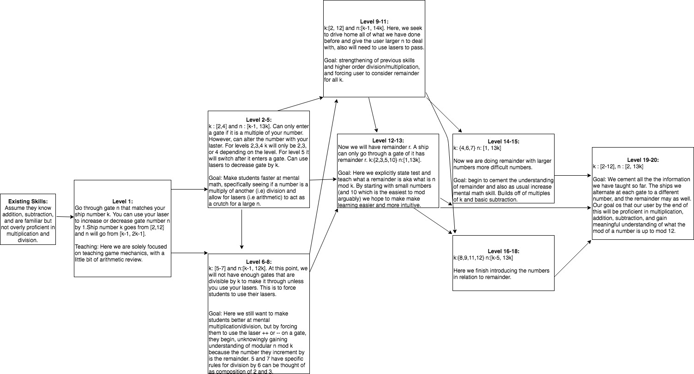

jvallee nhirsc Learning Content
We will begin assuming the child playing this game at at a third grade level in mathematics. So, the target user will have familiarity with addition, subtraction, and basic multiplication. The end goal is that they will strengthen these skills, become profient at mental multiplicatoin of two numbers up to 12 and understand the concept of remainder or the mod of a number. We will start very basic introducing the game mechanics, basic arithmetic, and the idea of a number being a multiple of another. With each level increase we marginally increase teh difficulty be either making the numbers we deal with larger, or adding a new concept. Whenever we add a new concept, we go back to using small numbers and ten build back up.
The game is called space racer and the player is in control of a spaceship called mod k (where k is an interger). The student must traverse a map, which is pretty linear, but the conflict is their spaceship will runout of energy unless they go through certain charging gates. Each charging gate is of type n. Depending on the level, the student must go through a gate that is a multiple of k, or gives you some remainder r when divided by k (depending on the level). Also, the student can change the number of the gate by firing and hitting the gate with their laser.
Keep in all the html. Place in your design directory of your repository.
You and your partner fill in your CNETIDs - you only need to submit to one of your
svn repositories.
Summarize your content area in 1-2 paragraphs.
Describe the age of your user and the skills that you assume the user already has
(that is relevant to your content). Your user must be in at least 3rd grade.
Describe what skills you are going to teach your user.

As stated above, we advanced the difficulty slowly, each way building upon something previosly known, in order to achieve new skills. We took a lot of inspiration from "K-8 Learning Trajectories Derived from Research Literature: Sequence, Repetition, Conditionals" in designing our trajectory, specifically spiral curricula. Each level relates and uses skills on some previous level besides or known knowledge. And